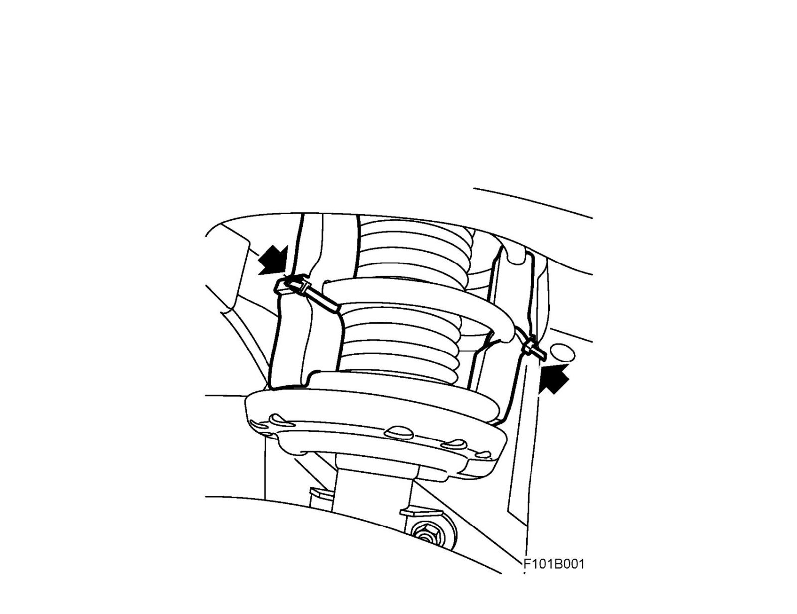

Transport Support VIN 81122974 (4D/5D) -
Transport support VIN 81122974 (4D/5D) -
1. Cut the cable ties.
2. Remove the transport supports from between the spring coils on the front springs. There are two supports on each side.
Save the transport supports for use if the car requires future transport.
Important
Do not transport the car with any other type of vehicle transport after removing the transport supports. Damage may occur to the front bumper due to the relatively low ground clearance of the car body design.